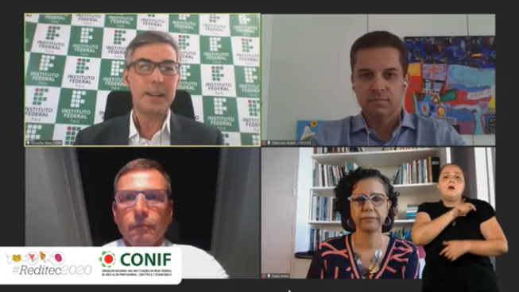
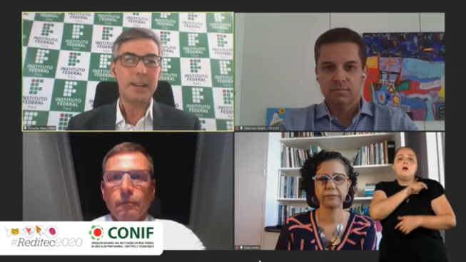

Mundo do trabalho no pós-pandemia é debatido no
terceiro dia da Reditec 2020
Especialistas discutem tendências este ano e o papel da Rede Federal na formação de profissionais para os novos contextos.
O mundo do trabalho no pós-pandemia foi o debate central do terceiro dia da Reditec 2020. A mesa-redonda sobre gestão e trabalho trouxe as visões de alguns especialistas sobre as transformações intensificadas nos últimos meses e sobre o papel da Rede Federal na formação de profissionais em um contexto de avanços tecnológicos,como a automatização proposta pela Internet das Coisas, a Indústria 4.0 e a Inteligência artificial.
 

As discussões foram mediadas pelo reitor do Instituto Federal do Pará (IFPA), Claudio Alex da Rocha. O tema foi abordado a partir de perspectivas apresentadas por Gleisson Rubin, da Secretaria Especial de Desburocratização, Gestão e Governo Digital; Peter Dostler, diretor executivo da STEINBEIS-SIBE do Brasil; e Luzia Mota, reitora do Instituto Federal da Bahia. A mesa-redonda contou a exibição de um vídeo da Orquestra de Violões do Colégio Pedro II. O diretor executivo da STEINBEIS-SIBE do Brasil, Peter Dostler, falou sobre como as grandes crises afetam a sociedade. Para Peter, o que se está vivendo hoje terá reflexos por 20 anos e é impossível ter certezas sobre a dimensão dessas consequências. "Mas nada será como antes e não se trata de aceitar ou não, mas de tentar entender e aprofundar. A Rede Federal é responsável por conduzir essa transformação com o seu público", disse.